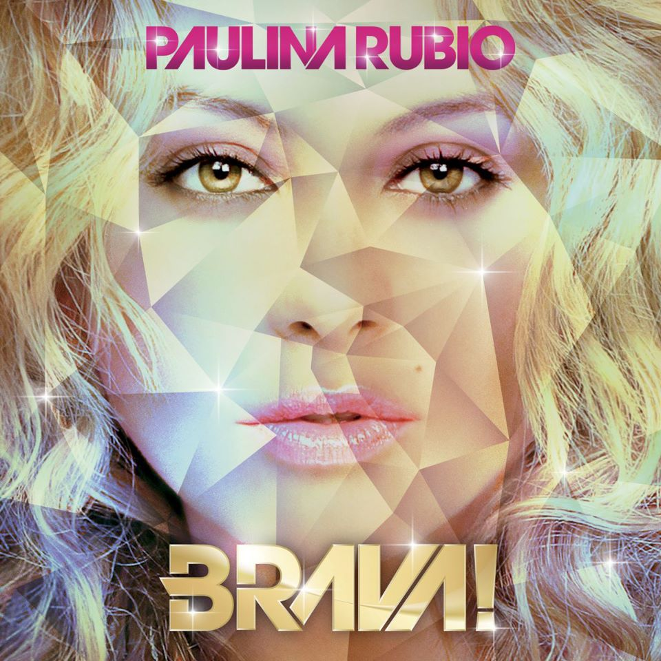

|  |
|
(Lyrics) Esa pasion que siempre por encima del bien y del mal te lleva simplemente del miedo a la gloria Pasa pocas veces por tu puerta y si dudas jamas viviras el mar de fiebre que envuelve al amor Yo que soy inflamable tan facilmente Voy, me doy y otra vez se repite la historia El, el me engaño con un cuchillo afilado entre dientes corto de raiz de un golpe el ayer Vuelve la paranoia vuelve un hombre a matar mi fe se repite la parodia de encanto y de seduccion Yo que soy abordable muy facilmente voy, me doy y aunque toda la culpa es mia El, el me engaño juro por Dios que nada en la vida nos separaria El, el me engaño se metio solo en la fotografia de mis oraciones Y luego se fue. El, el me engaño con un cuchillo afilado entre dientes me saco del mundo El... me engaño Aparentaba un amor tan valiente que me desarmo Y luego se fue... |